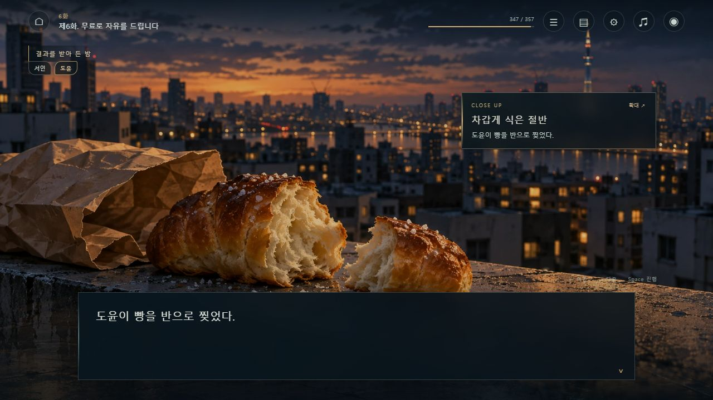
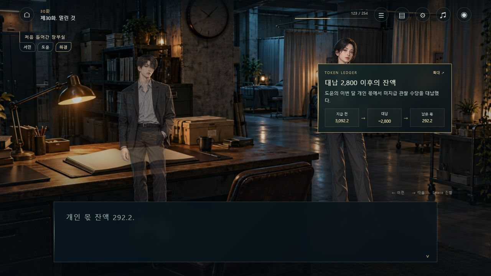
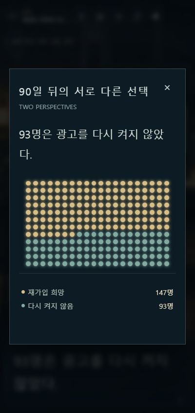

꿈을 잃은 세계 · 2026.10.19
1~30화,
읽는 장면에서 플레이하는 장면으로.
본편 30편과 사이 이야기 21편을 원문 순서 그대로 개별 연출했다. 장소와 실제 동석 인물을 맞추고, 판단에 필요한 자료가 등장하는 시점에 화면을 연결했다.
51연출 장220장소·시점 지시154시각 자료29새 최종 원화
브라우저에서 플레이 →
이번에 구현한 연출
- 지하철·버스·옥상·공방·상층 공간·물류기지·장부실·시장·회복실을 구분했다. 등장 중인 두 인물의 입상과 집중 대상을 배치하고, 소품 컷에서는 인물을 비워 컷 자체에 집중한다.
- 숫자를 비교 막대·시간선·240/400칸 도트·빈 일정표·장부 흐름·개념 연결도로 바꿨다. 연결도는 실제 지리 지도로 표시하지 않는다.
- 1화 아침 정산 +12.4와 밤 예상 +12.1, 24화 예상 18,420와 실제 13,006, 30화 도윤의 개인 몫 3,092.2→대납 2,800→292.2→라면 이후 288.3을 해당 문장 이후에만 표시한다.
- 모든 자료는 눌러 확대할 수 있다. 이전 문장·장 선택·저장 복원에서도 그 지점의 자료 상태를 다시 구성한다.
- 기존 세 관찰 선택, 자동/수동 저장, 지난 이야기, 글자 설정을 유지했다. 단축키·화면 숨기기·동작 감소·공간음 음량·장면별 바로 가기를 연결했다.
- 음향은 외부 곡을 가져오지 않고 합성한 짧은 공간음과 문·종이·물방울·알림 효과다. 기본값은 무음이다.
이전 웹 연출에서 이어온 장치
| 기존 장치 | 현재 원문에 맞춘 구현 |
|---|---|
| 7초 / 광고 중도 종료 / 0.8초 | 문장별 대기와 시간선, 깨어나는 컷, 재인증 자료. 클릭하면 대기를 건너뛴다. |
| 240→147 / 수요일 네 칸 | 147명·93명 분포와 회복률을 분리하고, 활용 보고가 없는 네 시간을 빈 칸으로 표시한다. |
| 유출·추론 경로 / 거절·접근 / 버전명 | 혐의와 확인된 원인을 구분하고, 책임 서명·접근 조건·비공식 평가표를 문서와 연결도로 표시한다. |
| 중단 권한 / 위험 이동 / 재신청 | 생활에 연결된 정산, 38분→1시간12분→2시간7분 지연, 71%→43% 재신청을 구분한다. |
| 400칸 / 같은 이야기의 두 가격 / 8분과1분 / 장부 | 399명+면제1명, 3 TOKEN과4,200 TOKEN, 이웃이 남는 거리, 개인 몫 지급 흐름을 시각화한다. |
이전 pilot.html은 연출 의도를 참고했다. 읽기 순서와 사건·숫자는 현재 작업 원문을 사용했고, 옛 HUD 잔액이나 제외된 판본은 가져오지 않았다.
실제 화면과 확인 범위


- 자동 검사 18개 통과: 105화+23범퍼의 원문 내용·순서, 전23716문장 이동, 51장 연출 상태, 차트/원화 참조, 저장 호환, 수치 공개 시점, 수정한 동석 인물 회귀 검사.
- 1280×720와400×844 실제 브라우저에서 장/연출 장면 이동, 확대 자료, 28px 글자, 동작 감소, UI 숨기기/복귀, 선택 Enter 처리와 새로고침 후 유지, 음향 켜기/끄기를 확인했다. 관찰한 콘솔 경고·오류는 없었다.
- 36개 게임 원화는 WebP로 묶었다. PNG 원본도 작업 폴더에 보관했다. 새 원화의 얼굴·복장·건축 세부는 각색 미술 디자인이며 설정집 확정 사실로 옮기지 않았다.
완료 범위와 남은 제작
1~30화와 포함 범퍼의 연출을 구현한 플레이 가능 제작본이다. 31~105화는 공통 무대다. 성우 녹음, 인물별 표정·자세 세트, 전문 작곡/믹싱, 전체 사람 플레이 QA까지 마친 상용 출시 완료판으로 표시하지 않는다. 단일 오프라인 HTML은 포함·문법을 검사했으며 직접 file 실행 UI 검증은 도구의 접근 제한으로 수행하지 않았다. 상업성·실제 독자 이탈 개선 수치도 측정하지 않았다.
장별 연출 기록
아래 행 번호는 수정 후 작업 원문의 위치다. 문장은 추가·삭제하지 않고 기존 문장에 연출 상태를 붙였다.
제1화. 오늘 밤의 행복은 12토큰입니다장소·시점 7 · 시각 자료 3
- 서인의 방 manuscript/ep001.md:3
- 광고꿈의 잔상 manuscript/ep001.md:31
- 서인의 방 manuscript/ep001.md:55
- 서인의 집 · 아침 manuscript/ep001.md:67
- 출근 열차 manuscript/ep001.md:155
- 회사 manuscript/ep001.md:179
- 오늘 밤의 선택 manuscript/ep001.md:402
제2화. AI가 모르는 것장소·시점 8 · 시각 자료 5
- 광고 없이 잔 첫날 manuscript/ep002.md:3
- 아침 식탁 manuscript/ep002.md:46
- 비어 있는 지우의 자리 manuscript/ep002.md:136
- 지우의 집 manuscript/ep002.md:176
- 집 밖 manuscript/ep002.md:315
- 서인의 방 manuscript/ep002.md:427
- 광고꿈 · 휴양지 manuscript/ep002.md:479
- 새벽 3시 17분 manuscript/ep002.md:547
제3화. 꿈꾸는 사람의 가격장소·시점 9 · 시각 자료 2
- 새벽 다섯 시 · 전화 manuscript/ep003.md:3
- 오래된 도예 공방 manuscript/ep003.md:93
- 편의점 앞 manuscript/ep003.md:197
- 나흘 뒤 · 정산 알림 manuscript/ep003.md:223
- 오지 않는 사람 manuscript/ep003.md:269
- 지우의 집 manuscript/ep003.md:285
- 혼자 걷는 귀갓길 manuscript/ep003.md:481
- 잠든 어머니 manuscript/ep003.md:495
- 광고 없는 밤 manuscript/ep003.md:525
제4화. 7초장소·시점 6 · 시각 자료 6
- 월요일 · 협상 전 manuscript/ep004.md:3
- 아르카디아 협상 manuscript/ep004.md:93
- 계약 이후 manuscript/ep004.md:495
- 퇴근길 manuscript/ep004.md:507
- 의료 상담 manuscript/ep004.md:621
- 발신자 미확인 manuscript/ep004.md:681
제4-1화. 4만 토큰짜리 눈치장소·시점 4 · 시각 자료 5
- 수요일 아침 · 기여도 manuscript/ep004-1.md:3
- 기여도 조정 회의 manuscript/ep004-1.md:51
- 회의가 끝난 뒤 manuscript/ep004-1.md:221
- 접힌 셋째 줄 manuscript/ep004-1.md:263
제5화. 가장 친절한 혁명가장소·시점 6 · 시각 자료 4
- 사흘 동안의 망설임 manuscript/ep005.md:3
- 폐쇄된 수면 클리닉 manuscript/ep005.md:11
- 지하 2층 manuscript/ep005.md:55
- 처음 마주한 도윤 manuscript/ep005.md:101
- 돌아가는 열차 manuscript/ep005.md:697
- 떠난 사람의 자리 manuscript/ep005.md:753
제6화. 무료로 자유를 드립니다장소·시점 9 · 시각 자료 6
- 두 번째 방문 manuscript/ep006.md:3
- 실험 오리엔테이션 manuscript/ep006.md:179
- 90일의 기록 manuscript/ep006.md:257
- 김재호의 소금빵 manuscript/ep006.md:279
- 결과를 기다리는 사람들 manuscript/ep006.md:361
- 45일 · 서로 다른 욕망 manuscript/ep006.md:409
- 김재호의 재가입 이유 manuscript/ep006.md:511
- 실험 뒤의 서로 다른 선택 manuscript/ep006.md:647
- 결과를 받아 든 밤 manuscript/ep006.md:665
제6-1화. 주말에 구우면 되죠장소·시점 3 · 시각 자료 3
- 상담센터에서 집으로 manuscript/ep006-1.md:3
- 재호와 하린의 집 manuscript/ep006-1.md:29
- 딸이 잠든 뒤 manuscript/ep006-1.md:183
제7화. 행복할 권리장소·시점 7 · 시각 자료 4
- 다시 읽는 147명의 기록 manuscript/ep007.md:3
- 집 근처 놀이터 manuscript/ep007.md:101
- 전화 속 지우 manuscript/ep007.md:237
- 젖은 셔츠와 빨래집게 manuscript/ep007.md:351
- 참가자 간담회 manuscript/ep007.md:441
- 서인의 자발적 꿈 manuscript/ep007.md:469
- 새벽 5시 03분 manuscript/ep007.md:519
제7-2화. 다음엔 내가 살게장소·시점 5 · 시각 자료 4
- 약속보다 17분 manuscript/ep007-2.md:3
- 덮밥집 manuscript/ep007-2.md:57
- 새는 지하 복도 manuscript/ep007-2.md:131
- 닫힌 건물의 세탁실 manuscript/ep007-2.md:201
- 조용해진 대야 manuscript/ep007-2.md:317
제8화. 신이 없는 상류층장소·시점 4 · 시각 자료 2
- 관찰 초대 manuscript/ep008.md:3
- 상층 객실 manuscript/ep008.md:33
- 같은 시각 · 최상층 전략실 manuscript/ep008.md:65
- 보좌관의 화면 manuscript/ep008.md:183
제8-1화. 의결권 없음장소·시점 2 · 시각 자료 2
- 전략 회의실로 가는 길 manuscript/ep007-3.md:3
- 열세 개의 의자 manuscript/ep007-3.md:21
제8-2화. 측정 상한장소·시점 3 · 시각 자료 3
- 창이 없는 방 manuscript/ep008-3.md:3
- 상층 객실 402호 manuscript/ep008-3.md:67
- 평가서를 쓰는 사람들 manuscript/ep008-3.md:201
제8-3화. 환자 이름장소·시점 5 · 시각 자료 2
- 상층 의료 구역 manuscript/ep008-4.md:3
- 전략실로 넘어간 요청 manuscript/ep008-4.md:43
- 이송 manuscript/ep008-4.md:117
- 화물 출구 manuscript/ep008-4.md:121
- 클리닉 의료실 manuscript/ep008-4.md:167
제9화. 인간이라는 비밀 병기장소·시점 5 · 시각 자료 2
- 끊긴 시간 manuscript/ep009.md:3
- 회복 닷새째 manuscript/ep009.md:149
- 밖으로 나온 날 manuscript/ep009.md:221
- 회사로 복귀 manuscript/ep009.md:326
- 평가 전날 밤 · 도윤의 선물 manuscript/ep009.md:536
제9-1화. 그냥 내일도장소·시점 6 · 시각 자료 2
- 평가 이틀 전 manuscript/ep009-1.md:3
- 회사 앞 manuscript/ep009-1.md:61
- 회사 뒤 국밥집 manuscript/ep009-1.md:89
- 같은 물레 앞 manuscript/ep009-1.md:191
- 늦은 저녁 manuscript/ep009-1.md:451
- 응시 여부를 고르는 밤 manuscript/ep009-1.md:555
제10화. 아무도 구해 달라고 하지 않았다장소·시점 6 · 시각 자료 2
- 의자 하나의 평가실 manuscript/ep010.md:3
- 평가실 밖 manuscript/ep010.md:97
- 다음 날의 제안 manuscript/ep010.md:127
- 서로 다른 두 시위 manuscript/ep010.md:377
- 동의서를 다시 쓰는 새벽 manuscript/ep010.md:535
- 시술 시작 manuscript/ep010.md:683
제11화. 0.8초를 지우는 일장소·시점 5 · 시각 자료 3
- 감각이 먼저 열리는 시간 manuscript/ep011.md:3
- 사흘 뒤의 회복실 manuscript/ep011.md:182
- 회복 중인 서인과 도윤 manuscript/ep011.md:286
- 집으로 돌아온 날 manuscript/ep011.md:394
- 모노의 재인증 manuscript/ep011.md:474
제12화. 모르는 것을 아는 사람장소·시점 4 · 시각 자료 3
- 본사 검색대 manuscript/ep012.md:3
- 의자 둘의 면담실 manuscript/ep012.md:61
- 면담실 · 첫 번째 문제 manuscript/ep012.md:179
- 사람이 없는 자료 manuscript/ep012.md:345
제12-1화. 확인 전장소·시점 5 · 시각 자료 2
- 보안팀의 이관 요청 manuscript/ep012-1.md:3
- 폐쇄 클리닉 앞 manuscript/ep012-1.md:163
- 골목에서 올려다본 옥상 manuscript/ep012-1.md:205
- 최고위 전략실 manuscript/ep012-1.md:295
- 외근 기록 manuscript/ep012-1.md:345
제13화. 떠나지 않을 이유장소·시점 2 · 시각 자료 2
- 전략실의 첫 업무 manuscript/ep013.md:3
- 컵라면과 빈 시간 manuscript/ep013.md:487
제13-1화. 수요일 네 칸장소·시점 3 · 시각 자료 2
- 수요일 오후 1시 58분 manuscript/ep013-1.md:3
- 목적지를 정하지 않은 걸음 manuscript/ep013-1.md:53
- 수요일의 공방 manuscript/ep013-1.md:75
제13-2화. 확인하지 않음장소·시점 5 · 시각 자료 2
- 외근으로 적어 둔 날 manuscript/ep013-2.md:3
- 느린 길로 manuscript/ep013-2.md:55
- 24시간 편의점 창가 manuscript/ep013-2.md:61
- 돌아가는 골목 manuscript/ep013-2.md:113
- 마지막 열차 manuscript/ep013-2.md:205
제14화. 두 번째로 보지 않은 사람장소·시점 4 · 시각 자료 3
- 오전 10시 16분 manuscript/ep014.md:3
- 격리 이후 manuscript/ep014.md:229
- 2분 11초가 남은 방 manuscript/ep014.md:487
- 다시 어두운 방 manuscript/ep014.md:709
제15화. 업데이트된 사람장소·시점 5 · 시각 자료 2
- 얼굴을 보지 않는 방문 manuscript/ep015.md:3
- 정답이 없는 사진 manuscript/ep015.md:129
- 다시 회사로 manuscript/ep015.md:207
- 허락을 구하고 보는 얼굴 manuscript/ep015.md:259
- 복귀 첫 업무 manuscript/ep015.md:461
제15-1화. 일곱 번째 죽장소·시점 3 · 시각 자료 2
- 클리닉 공용 주방 manuscript/ep015-1.md:3
- 두드리지 않은 문 manuscript/ep015-1.md:133
- 비어 있는 그릇 manuscript/ep015-1.md:159
제16화. 지는 쪽의 이유장소·시점 4 · 시각 자료 3
- 중앙 전략망 manuscript/ep016.md:3
- 동부 의료 물류 입찰 manuscript/ep016.md:95
- 판단을 사려는 사람들 manuscript/ep016.md:499
- 열지 않은 제안 manuscript/ep016.md:583
제16-1화. 남겨 둔 차장소·시점 3 · 시각 자료 3
- 동부 물류기지 manuscript/ep016-1.md:3
- 인계 전 여섯 시간 manuscript/ep016-1.md:47
- 현장 확인 뒤의 인계 manuscript/ep016-1.md:393
제17화. 없는 것을 빌려드립니다장소·시점 4 · 시각 자료 2
- 돈 · 검증 · 접근 manuscript/ep017.md:3
- 네리움 원격 세션 manuscript/ep017.md:169
- 늦은 귀가 manuscript/ep017.md:535
- 열람 요청 manuscript/ep017.md:609
제18화. 고장 난 날의 버전 번호장소·시점 3 · 시각 자료 3
- 같은 책상 앞 manuscript/ep018.md:3
- 남이 붙인 이름 manuscript/ep018.md:453
- 다음 날 오전 7시 · 열람 화면 manuscript/ep018.md:509
제19화. 문을 열어 주는 사람장소·시점 4 · 시각 자료 3
- 등급 4의 열람 화면 manuscript/ep019.md:3
- 권한 심사 manuscript/ep019.md:133
- 면담 뒤의 복도 manuscript/ep019.md:535
- 결과를 보낸 밤 manuscript/ep019.md:633
제19-1화. 출발하지 않은 저녁장소·시점 3 · 시각 자료 2
- 식품 물류 출고장 manuscript/ep019-1.md:3
- 먼저 약속된 납품 manuscript/ep019-1.md:29
- 바뀐 순서로 받는 상자 manuscript/ep019-1.md:283
제19-2화. 저녁값장소·시점 4 · 시각 자료 2
- 남은 식품 manuscript/ep019-2.md:3
- 직원 식당 manuscript/ep019-2.md:43
- 같이 처리하는 손 manuscript/ep019-2.md:199
- 일을 마친 식사 manuscript/ep019-2.md:333
제20화. 누를 수 있는 사람장소·시점 4 · 시각 자료 3
- 공동 운영위원회 manuscript/ep020.md:3
- 중단 권한 시뮬레이션 manuscript/ep020.md:281
- 저녁의 컵라면 manuscript/ep020.md:435
- 등급 6 화면 manuscript/ep020.md:529
제20-1화. 두 집의 밤장소·시점 4 · 시각 자료 2
- 은경의 집 manuscript/ep020-1.md:3
- 해린의 집 manuscript/ep020-1.md:67
- 은경의 밤 manuscript/ep020-1.md:127
- 해린이 기다리는 밤 manuscript/ep020-1.md:155
제21화. 좋아진 밤의 가격장소·시점 3 · 시각 자료 5
- 04-771 운영 회의실 manuscript/ep021.md:3
- 해린과 연결된 통화 manuscript/ep021.md:131
- 운영 회의실 manuscript/ep021.md:203
제21-1화. 마지막 한 사람장소·시점 2 · 시각 자료 3
- 기울어지는 송출탑 manuscript/ep021-1.md:3
- 알람이 울린 아침 manuscript/ep021-1.md:187
제22화. 네 번째 안전장소·시점 1 · 시각 자료 3
- 04-771 운영 회의실 manuscript/ep022.md:3
제22-1화. 57분장소·시점 3 · 시각 자료 3
- 이사회 직전 manuscript/ep022-1.md:3
- 25층 이사회 manuscript/ep022-1.md:17
- 다시 만든 참여 화면 manuscript/ep022-1.md:243
제23화. 당신이 말했으니까장소·시점 4 · 시각 자료 3
- 내부 동의 화면 manuscript/ep023.md:3
- 익명 질문창 manuscript/ep023.md:129
- 선택 옆에 놓인 조직 평균 manuscript/ep023.md:271
- 밤의 완화 결과 manuscript/ep023.md:513
제24화. 이름을 빌리는 법장소·시점 5 · 시각 자료 4
- 이름으로 검색되는 상품 manuscript/ep024.md:3
- 수혜와 참여 보상 manuscript/ep024.md:119
- 김수현과의 원격 통화 manuscript/ep024.md:175
- 기업 책임자와의 원격 통화 manuscript/ep024.md:263
- 이름을 뺀 뒤 manuscript/ep024.md:459
제24-1화. SEO-IN 인증서 팝니다장소·시점 3 · 시각 자료 2
- 버스 정류장 manuscript/ep024-1.md:3
- 컨테이너 회의실 manuscript/ep024-1.md:53
- 돌아가는 버스 manuscript/ep024-1.md:393
제25화. 같은 선택장소·시점 1 · 시각 자료 3
- 도시망 시범 제안 manuscript/ep025.md:3
제25-1화. 위층 사람장소·시점 3 · 시각 자료 3
- 장을 보러 가는 길 manuscript/ep025-1.md:3
- 빈 냉장고 칸 manuscript/ep025-1.md:369
- 정미경이 찾아온 밤 manuscript/ep025-1.md:447
제26화. 먼저 되는 사람장소·시점 6 · 시각 자료 3
- 아침의 알림 manuscript/ep026.md:3
- R-17의 적용 manuscript/ep026.md:63
- 운영국 원격 면담 manuscript/ep026.md:207
- 어머니가 보낸 단체방 사진 manuscript/ep026.md:281
- 집으로 돌아온 저녁 manuscript/ep026.md:317
- 말하지 못한 걱정 manuscript/ep026.md:573
제27화. 한 가지만 묻는 법장소·시점 5 · 시각 자료 3
- 어머니가 나간 뒤 manuscript/ep027.md:3
- 시장으로 이어진 전화 manuscript/ep027.md:51
- 늦게 도착한 자리 manuscript/ep027.md:247
- 법적 대응 manuscript/ep027.md:369
- 집 안까지 들어온 가격 manuscript/ep027.md:419
제28화. 이사 가지 않는 이유장소·시점 4 · 시각 자료 4
- 아침의 전화 manuscript/ep028.md:3
- 편의점 앞 제안 manuscript/ep028.md:35
- 집에서 온 경보 manuscript/ep028.md:295
- 문 앞의 화분 manuscript/ep028.md:371
제29화. 지우의 값장소·시점 5 · 시각 자료 3
- 지우와의 약속 manuscript/ep029.md:3
- 기다리는 시간 manuscript/ep029.md:197
- 비어 있는 공방 manuscript/ep029.md:247
- 다시 맡아 보는 흙 냄새 manuscript/ep029.md:279
- 지우의 아버지에게 온 전화 manuscript/ep029.md:439
제30화. 밀린 것장소·시점 6 · 시각 자료 4
- 아침의 메시지 manuscript/ep030.md:3
- 컵라면 3분 manuscript/ep030.md:27
- 처음 들어간 장부실 manuscript/ep030.md:145
- 물류센터 앞 편의점 manuscript/ep030.md:277
- 미라에게 건 전화 manuscript/ep030.md:375
- 함께 걷는 밤 manuscript/ep030.md:473
제30-1화. 소금빵 수거팀장소·시점 4 · 시각 자료 3
- 클리닉 앞 편의점 manuscript/ep030-1.md:3
- 열려 있는 재호네 문 manuscript/ep030-1.md:25
- 찢어진 종이를 고치는 손 manuscript/ep030-1.md:167
- 자정을 넘긴 장부실 manuscript/ep030-1.md:191
제30-2화. 같은 혁명장소·시점 1 · 시각 자료 4
- 같은 밤의 장부실 manuscript/ep030-2.md:3